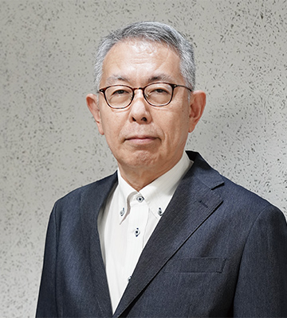
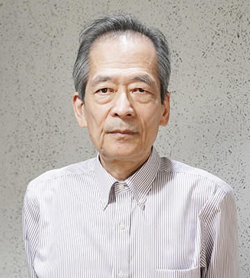
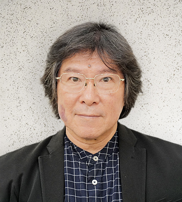
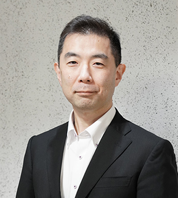

The Center for Research and Development on Secure Computer Systems (CRADSEC) was established in April 2025 under the Data Science Collaborative Support Unit (DS) of the Research Organization of Information and Systems (ROIS), Japan. ROIS comprises four national institutes and one collaborative support unit, with ROIS-DS serving as a foundation for advancing data science across research domains.
NEWS
- 2025年10月XX日
- 内容内容
- 2025年10月XX日
- 内容内容
- 2025年10月XX日
- 内容内容
Overview
本研究開発では、IoTからクラウドまで多様なプラットフォームにおいて、その要求・脅威モデルに応じて適切な保護領域を構成できる単一のTEEアーキテクチャ（高信頼実行環境の構成方式）を実現します。ハードウェアが提供するプリミティブ（基本メカニズム）を用いて、ソフトウェアが柔軟に保護領域を構成し、それがセキュアであることを理論的に保証します。また、プライバシーなどを考慮したアテステーション(真正性・完全性検証)機構や、暗号処理などを含むTEEアプリケーションを異なるTEE上でセキュアに実行するミドルウェアを開発します。
また、共同利用基盤施設として、研究コミュニティおよび若手研究者の育成、国際標準化などのアウトリーチ活動や新たな価値の創出に向けた活動を推進します。
本研究開発は、内閣府が進める経済安全保障重要技術育成プログラム(K Program) の支援を受け、開発構想 セキュアなデータ流通を支える暗号関連技術（高機能暗号） の支援を受けています。
Members
-

石川 裕
センター長・特任教授 -

五島 正裕
副センター長・教授 -

竹房 あつ子
副センター長・教授 -

関山 太朗
副センター長・准教授 -
河野 健二
副センター長・客員教授 -

大堀 淳
特任教授 -

大畑 幸矢
研究員 -

内山 一秀
リサーチ アシスタント -

松見 湧斗
リサーチ アシスタント -
佐々木 怜名
リサーチ アシスタント -

喜多 陽花
リサーチ アシスタント -
古川 潤
客員教授 -

高前田 伸也
客員准教授 -

塩谷 亮太
客員准教授 -

木村 啓二
客員教授 -
光来 健一
客員教授 -

須崎 有康
客員教授 -

中條 拓伯
客員教授 -

宮澤 慎一
客員講師 -

光澤 敦
客員教授 -
小口 正人
客員教授 -

小林 直樹
客員教授 -
畑 輝史
-

高田 勝悟
-

橋本 浩一